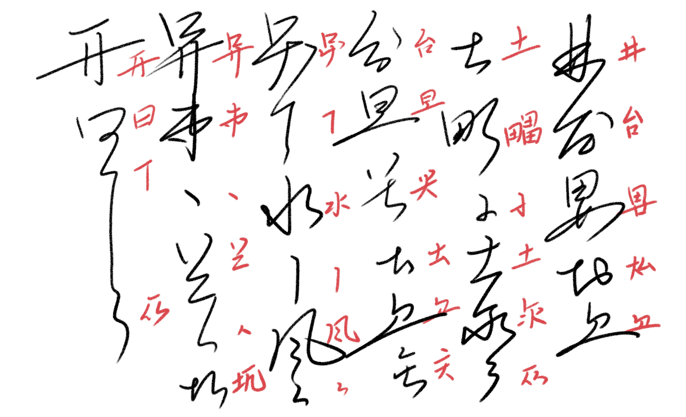

meloviliju — 2022/08/18 01:17
これかなり字として存在しそうなんだけど【癒】とは別字な感じもちょっとする
meloviliju — 2022/08/18 01:17
これかなり字として存在しそうなんだけど【癒】とは別字な感じもちょっとする
以下は、主に jekto.vatimeliju の手による燐字進捗振り返りログである。前スレは lin-marn.html である。
2022年後半～2023年前半にわたって、燐字などにまつわる進捗をここの HTML として一般公開する手間をサボっていた。
ということで、それをしっかり振り返るための場所がこの lin-marn2.html である。
lin-marn.html は「1.」「2.」など順番に更新していくのが基本方針であったが、振り返るべきことが増えてきた今や、時系列で整理することなど半分あきらめ、とりあえず反映すべきものを見つけ次第どんどんさらっていって書いていくことを目標とする。
現在 2023 年 10 月 1 日。ところで、composition.txt の最終更新が2022 年9月4日なので、一年以上まともなメンテをしていなかったことになる。
この 1 年の間、燐字やパイグ語に関しては結構な進捗があったが、それを全然まとめ上げてこなかったということになる。
ということで、そのための大・振り返り作業が必要になる。さて、いまちょうど 256. まで書いてキリがよいので、某匿名掲示板よろしく、一旦別の HTML ファイルに切ってから作業を行おうと思う。
2023年9月18日の linzi_image_table_narrow 更新時に SY に対して「SY 手書き文字、残り 44 件ほしい」と伝えたところ、SY が書いてくれた。やったぁ。

ということで、（えーと第何回だ）
「燐字表示17」フォルダに「2021年9月4日」って書いてあるってことは、第17回って実に 2 年前？ マジ？？？
ということで、第18回燐字書き取りの画像分割＆収録をやっていく。いやぁマジで久しぶりだな。
分割をする。今回 SY は【寒】を書き忘れ、【囁】をもう一度書いてくれたので、結果としてできた画像はこの通り。
【囁体遊怖万胸頬呉待檸叫鶏決引汪哦榎株織村犛牲溜泉玉叉飛鍋蟲矢玄慥釘槌妙涙悖順嗚黍乾湿搾窄】
さて、超ひさびさにマニュアルを開き、何をやるべきかを確認していく。
これマニュアルもちょっと古いな…… image_existence_table.ts の更新部分の説明が不十分。ちょっとマニュアル直すか。てか meloviliju が補足残してくれているな。
とりあえず、tsc まで終わったのでコミットする。
よし、追加し終わった。ちゃんと table_narrow の SY 手書きが「残り 1 字」になったぞ。
えーと、「燐字書き取りのリンクを書き換える」？
あ～『「第k(≧15)回燐字書き取り」燐字と原稿用紙』ってやつかぁ。あったねそんなの。

まあ、一応直しておいてあげるかぁ。
そして to_linzi_image.html の表も書き換えが必要。やりましょう。
さらに Spoonfed Pekzep へとコピーしておかないとね。コピーした。
2023年9月19日の午前4時ごろ、以下のような話がされた。
れもん「あー iam1 そもそももう口の意味であまり使わないのか」 SY「現代パイグ語だともはや『顔の口』って言いそうだなぁ」 hsjoihs「四音節制約があるので、『口を開けてください』は【心開下口】でできるが、ここに【真】とかが加わると【心真開下顔口】にする必要が出るのではなかろうか」 SY「【真心】の語順の方が言いそうだが、作用域が違うから差が出るのかなぁ。『真剣に口を開けてください』vs. 『口を開けてほしいと私は真剣に思っています』」 hsjoihs「じゃあ【心常開下顔口】の方が差が明確化できて例文として上手いかな」 hsjoihs「ところで【顔】は転写を予約していて造字済みですらあるので、あとは音さえ作れば立てることができますよ」 SY「最近乱択が多かったので、たまには同根語で作りますか」 hsjoihs「そういや『頭』って通言語的に名称が変わりやすいらしいですね」 https://twitter.com/Mitchara/status/967026410081615873 > @asaokitan ロマンス語でもそうですが、頭は身体部位の中で性器と並んで名称が変わりやすいんですよね。なぜかはわかりませんが、たしかSihlerの歴史言語学の教科書にそんな指摘がありました。 > 2018/02/23 22:20 hsjoihs「sania.ar『顔』と sanuka.ar『姿』の間に関係を見ていく手があるかもしれん」 SY「ほかに san- で始まるのどういうのがあります？」 hsjoihs「sanati『黒肌』、sanusu『オレンジ肌』というエントリーがある。こいつらを無批判に採用するかはともかくとして、san- からなる肌方面の複合語がある可能性はある」 SY「son1【前】と関係したりしません？」 hsjoihs「ありそう～」 SY「*saunu 方面を仮定するといけそう」 hsjoihs「いずれにせよ san(0|1|2) か？」 SY「まあそれを取るのならそうかも。son1 と結びつけるなら原義側が『顔』かな」 SY「鼻音韻尾だし 0 にはなりにくそう。son1 との同根性を見たいなら 1 声かなぁ」 hsjoihs「古牌が反り舌ではないと言っているので、san1 で行きますか」 SY「【顔】、どこまで指せるんですかね。困りそうですね」
ということで、【顔】に san1 という字音がついた。これに対し、meloviliju は「san- + pogo > sabogo 顔色とかできるかも？」と同日の昼に提案した。
さて、これを正式に登録する作業がずっと先送りにされていた。2023年11月3日に行われた「同志社語学同好会アジト パイグ語」で
として【顔口】という語が明示的に紹介されたので、2023年11月4日現在、jekto.vatimeliju はついにその登録作業をやっていくこととした。さてマニュアルを見るぞ。
2023年11月6日、Spoonfed Pekzep に文字用のページを作って、そこに以下のような（https://zi.tools を参考にした）字素への分解を載せるということを考えた。

ところで、composition.txt は造字原理に基づいておらず、字の構成をプレーンテキストで書き表すために無理やり書いている節がある。
これでは字について解説するという目的を果たせないので、より字の成り立ちに沿った分解を、「じげん」シートを参考にしつつ整備すべき、という問題意識が生まれた。
00:58 には作業場所の Google Spreadsheet が定まり、04:30 に完成した。
今のところ、Spoonfed Pekzep リポジトリの raw/linzklar-dismantling.tsv を正本としておくが、これを管理する責務は Spoonfed 側ではないだろうという気もするので移管するかもしれない。
以上の話を書き残す必要性を2023年11月20日に感じたので、書いている。マニュアルにも加筆しておいた。
2023年11月20日、jekto.vatimelijuが「またもや不足分のビットマップを組んだのでご意見いただくか」と提示。
それに対し、たもとさんが「【⿰心字】の左側が浮いている印象を受けたので下に降ろしてみました」としてを提示。「残り2つはそのまま使えそうに見えます」とした。
skarsna.meloviliju が「たもとさんに同意です」、FengNegiさん / 雪琴声(let1 lia1 cuop2) が「たもとさんの意見に同意します」とのことだったので、これで行こうと思う。
「231. 【癒】」から引用すると、
パイグ語一言語教材が書かれ始め、それに関してこのような会話が成された。
SY「人々を助ける職業名を入れたい。医者って言いたいんだよな」 j.v「いま造語しよう！｝ SY「形態素としてあるんかな？」 SY「『薬』系統になる可能性がある」 j.v「ナワトルは全て『薬草』tepahtli で言ったはず」 SY「【癒】、作りましょう」 SY「『癒す』『治癒する』『なぐさめる』辺りを」 j.v「韻図乱択からアイル逆算しますか」 乱択：声母【来】/zr/ 韻母：【地】 /əp/ ----------------------- SY「【癒】sep2」
とある。
この会話が行われたのは 2022年8月12日のことであって、その 6 日後の 2022年8月18日には skurlavenija.mavija (みっとん) によって次のような造字提案がされていた。
まい/MIT — 2022/08/18 01:13SY — 2022/08/18 10:38 良さそうな気もするけどなあ
時は 1 年以上流れ、2023年8月22日。
BS朝日のテレビ番組「脳内ワンダーランド」に出場するにあたり、【癒】の字形が本格的に必要となったので、決めていくこととなった。
SY — 2023/08/22 20:58 @よくいる人 〔急募〕【癒】の字形 hsjoihs — 2023/08/22 20:58 なるほどね meloviliju — 2023/08/22 22:14 【⿱⿰筆筆傷】治療の象形 hsjoihs — 2023/08/22 22:15 やはり【手】と【傷】周りの字形になるわよね meloviliju — 2023/08/22 22:15 略して筆四はかなりアリかも hsjoihs — 2023/08/22 22:15 > まい/MIT — 2022/08/18 01:09 > 造字形案: 【癒】=【⿱傷手】 >
ということで、【癒】=【⿱傷手】が最終確定し、番組制作側にはこのような画像を提出した。
番組はこのような形となったが、

この左下に映っている小道具が旅行ハンドブックになっており、中にはこのように会話フレーズ集がまとめられていた。
ということで、【癒】=【⿱傷手】に立派な運用実績ができたので、登録作業をしなくてはいけない。
字の構成原理は「形集之字：【傷】に【手】をあてている様子で治療を描写する。」と説明すべきだろう。
Spoonfed の dismantling にも登録。
久々に defined_but_no_image_prepared 欄を使ったな。さて画像を作らねば。

リパライン語 teri「バス」の借用 tei1 を表す字。
「パイグ語・古パイグ・燐字などについて考察する」の「96. 『杯』と『叮』」にあるから、2020年8月に立案されたやつということになる。歴史が長い。
hsjoihs — 2023/09/03 16:41 @よくいる人 パイグ語話者にとって完璧な keyboard instrument の「正解」を釣り上げたのでご報告します 漢字転写：（terpstra keyboard へのリンク） ラテン字転写：（terpstra keyboard へのリンク） SY — 2023/09/03 17:19 エンハーモニック鍵盤？ hsjoihs — 2023/09/03 17:22 ですね。で、ユンカーとユナフラの不協和ペア（現世で言うトライトーン）が「音素逆順、声調逆」SY — 2023/09/03 17:24 あー hsjoihs — 2023/09/03 17:40 霊感: nu2 は病気の名前だが、稀字だし縁起悪いしで ne2【猫】か lu2【新】で書かれがち te1 は木の名前だが、これまた僻字なので tei1【叮】（バス）で書かれがち hsjoihs — 2023/09/03 18:23 すでに pa2【犬】があるので ne2 の相性がいいHarmy e chypo dyrilの類のやつなので、諸詩ですね。要約すると「楽器の12個の音をユンカーとユナフラが6つずつ奪い合ったので、ユンカーの第一の音はユナフラの第一の音と喧嘩し、第二の音は第二の音と喧嘩する」
— 【ゲムマ両サ-19】hsjoihs (はすじょい) @ 言語が好き (@sosoBOTpi) March 7, 2019
ということで、音楽の方面でも【叮】の字を使う需要が発生した。
春豊席 — 2023/11/19 19:30 @識清之人 グリフ案：【叮】「バス」：【⿰車力】 理由：【咍】の略体（これ自体が tai.ar「力」に由来するもの）を声符として tei1 の字音を表したもの 翰刀時 — 2023/11/19 19:31 造字としては賛成 力はどちらかというとにょうになるのではないだろうか 春豊席 — 2023/11/19 19:34 あ～そうかそのルートもあるのか 左右だとこうにょうだとこうか
んーでも【咍】とのつながりが見えやすいのは左右型のほうではという気もする 翰刀時 — 2023/11/19 19:46 車が左に来るのがかなり違和感 星天混 — 2023/11/19 20:09 いい具合に縦長にすれば耐えそうではある 春豊席 — 2023/11/19 20:14 単に今まで【車】を構成要素にしている字を一字も知らないから違和感あるだけじゃないかなぁと思うんですよ > いい具合に縦長にすれば耐えそうではある 同感です ビットマップだとこうかなぁ
翰刀時 — 2023/11/19 20:19 まぁこれまでのパターンにより合致しそうな構成なげただけなんで、反対はしません 現世の漢字でも違和感ある字山ほどあるし…… ビットマップはそうなるなぁ 春豊席 — 2023/11/19 20:19 にょうのほうが実際【季】とかとは整合的よね 翰刀時 — 2023/11/19 20:20 【力神】とも整合的 春豊席 — 2023/11/19 20:20 あーそんなのも提案あったなぁ 翰刀時 — 2023/11/19 20:20 これなんだっけ、【仙】？ 春豊席 — 2023/11/19 20:22 あと【能】=【⿺力手】がありますね 春豊席 — 2023/11/19 20:22 まあ一方で、今回この【力】って音符だからなぁ 星天混 — 2023/11/19 21:59

てなわけでできた五度圏がこちら。


その後、2023年11月23日か24日ぐらいに、「音素逆順、声調逆」が「r綴りをして、綴りを逆順にする」で実現できるという閃きを得て、「これは一言語で命名まで解説できそうだな」となり、せっかくなので、パイグ語オンリーで最低限の解説をした。https://sozysozbot.github.io/praige_circle_of_fifths/
といった解説もできたし、満足。
当然登録作業が待っている。えーと「形声」「音符【力】（【咍】の略体）、意符【車】。燐帝より後の時代の字。」でよかろう。
ビットマップは用意できているので、あとは image_existence_table に足すだけ。足した。
そろそろ重い腰を上げて取り掛からねばならないので、meloviliju が分離した。新リポジトリは https://github.com/jurliyuuri/ail となる。
久々の geometric 組み。
そういえば、to_binary がそれなりに前からコケていたので、それも修正した。
このバイナリフォーマット、定めたはいいけど全然使ってないんだよな。このフォーマットでオンラインエディットできるようなのとか作ったら面白そうではあるんだが。
2023年2月1日、hsjoihs が参加していなかった「りんちゃんの会」での意思決定により、【賢】【招】【緑】【斥】【虹】【雷】の 6 字が採用されることとなった。
これの追加作業が今までずっと行われてこないままだったのだが、こと【斥】については運用実績が山積しており、
翰刀時 — 2023/02/06 01:05 字音決定 【斥】cuat
SYによる乱択により決定。
今回のゲムマではこんな冊子を出展します！！！
— 日本机戦連盟@ゲムマ2023春-キ07両日 (@cet2kaik) April 5, 2023
「アイル共和国」で遊ばれるたくさんの伝統ゲームを収録、解説した『我々の遊戯』の和訳版です！#ゲムマ2023春 #ゲームマーケット2023春 pic.twitter.com/5sDvbi3meB
といった感じであり、一刻も早く正式に登録する作業をしなくてはならない。
よって登録しにいろんなリポジトリを巡った。「燐字数の成長記録(パイグ語漢字転写早見表より)」とかすっかり存在を忘れていたなぁ。
2023年12月4日、SY宅に宿泊中の hsjoihs は以下の画像の翻訳・査読を依頼された。

【巫】の機能のところにある【二別】を読むのに hsjoihs は手こずり、SY に訊いたところ「二分の一、つまり半分」と言われた。
「一応前例として【万別】が提示されている」という話をされ、たしかに 2019 年 4 月ぐらいのログが観測できているが、とはいえこの体系も「ややこしいわりには運用実績が薄い」などの話も出た。
それはそれとして、かなり多くの言語で「半分」は「2」とは別語源の形態素で言うので、まあグリフと語を立ててそれで言いたいよねという話となった。
画像 hsjoihs — 今日 03:08 SY「【半】造語してもいいですよね。グリフまで一気に作る必要が出るけど」 hsjoihs「せっかくだし作りますかぁ」 SY「『割る』系の動詞と同根でもいいですよね」 hsjoihs「とりあえず Wiktionary 漁りとかするかぁ」 hsjoihs — 今日 03:19 hsjoihs「古今東西の言語、半分に関してはだいぶ『分けて』ますね」 SY「それか借用語に奪われているか」 hsjoihs — 今日 03:29 SY「とりあえず語より先に字形考えるか」 hsjoihs「そっちのほうが喫緊だもんね」 SY「【刀】とかつくのかなぁ」 hsjoihs「たしかにね」 hsjoihs「【震】みたいなノリで【刀】の左右に点を置けばいいのでは」 SY「あー」 SY「左右か」 SY「左右じゃない気もするな」 SY「『切り株の象形だったが、隷変で【糸】に化けた』とかは考えた」 SY「【刀】の左右に点、そのままだと非常に字形のバランスが悪いとは思う」 hsjoihs「ほうほう」 hsjoihs — 今日 03:38 SY「【筒】、おそらく竹の象形字なので、これが使えないだろうか。【刀】と【筒】とか」 SY「なんか縦棒多すぎるなぁ」 SY「【刀】2つという手」 hsjoihs「……アリ」 SY「一番無難な気がしてきた。困ったときに 2 つ書く」 hsjoihs「2 つに割るしなぁ」 SY「燐字、困ったときにこういうことよくしますよね。【即】しかり【歌】しかり」 SY「刀 2 つ……」 hsjoihs「まあ納得は行く」 SY「突然牛が出てくる漢字とかいう文字体系に比べれば納得がいく」 hsjoihs「『解』にも突然牛が登場するしなぁ」 hsjoihs — 今日 03:46 SY「『告』にも唐突に牛が出てくる」 hsjoihs — 今日 03:56 SY「刀 2 つでいいですかね」 hsjoihs「それでいきましょう」 hsjoihs — 今日 04:04 SY「転写はもちろん【半】でいいですよね」 hsjoihs「はい」 hsjoihs「【半】の転写が予約されたのは実に 2019 年 7 月 12 日のことなので、4 年以上熟成させていたことになる」
ということで、字形登録作業。
「じげん」スプレッドシートは、
とした。
【斥】の geometric は元々用意してあったのでそれを持ってくるだけ。
【半】は【刀】を 2 つ並べるだけなので、簡単に新造。SY にもチェックしてもらう。

【斥】のビットマップを作り、SY にもチェックしてもらう。
【半】のビットマップを作り、SY にもチェックしてもらう。
あまりに案を出すだけ出してそこからのプロセスをさぼりすぎた字がたまりすぎてきたので、とりあえずこれまでの造字案の決議をとることにした。
j.v「これかなり拍手でいいと思う」
ということで、可決！
SY「縦棒払ってもいいけどそれは【耳】なんだよな」 j.v「特に積極的な賛成理由も反対理由も見当たらない」 MIT「【耳】-ness をどう回避するか」 mel「強いて言えば、横画が突き出ることによる弁別のしやすさがあるのでは。SYって普段【耳】どう書くっけ？」 SY「【耳】あんま書かない」 SY「まあ字形衝突はしないかぁ」 j.v「構成要素になったときにいい感じに訛ってくれそうですよね」 SY「【左】と【而】が対立できる体系だからなぁ」
拍手！
SY「地方差・微妙な語義差かもしれない。両方あってもいい」 j.v「まあ私もとりあえず両方立てておく案でいいと思いますけどね」 mel「転写と字義どうします？」 MIT「転写ね～～どうしようね～～」 MIT「【天】がつく方が豪華な字にしたい」 mel「これ過去にも言ってるんですけど【術】がつぶれて【＊廾】になってもいいと思っていて」 SY「【助】とかもそうですね」 mel「あれって【五】と両手だったのか」 j.v「とりあえず全部立てましょう」 mel「転写どうします？」 SY「贄、奉、捧！」
ということで、【贄】【⿵天与】、【捧】【⿱口術】、【奉】【⿱口＊廾】が立った。
ちなみに、この後のSYが「せっかく字が立ったし使おう！」と書いた文書において、「税」が【奉銭】で表記された。
転写【周此時我地大旱而大飢吁 此故心於地王与下米一星之奉銭無在之御助言下吁】
日本語訳「近頃我らの土地は大旱魃と大飢饉でございます。このため土地の長官には米をお与えくださることと一年分の税をなくすようご助言くださるようお願いします」
mel「ところで【奉】と【捧】って異体字なんだろうか」 SY「用法にそれほど差が出そうには見えないが……」 mel「うーん、運用がなされるまで待つというのはどうです？」 みんな「普通にアリ、そうしておこうか」
異体字か分化字かの判別は見送られた。運用をする必要がある(どの字にも言えることだが)。
27/09/2023 03:18 MIT「支える、【＊무】とかどうですか」 j.v「私は【机】案の方が賛成だなぁ」 mel「机だなぁ」 MIT「こういうのは机のセンスっぽい」 SY「机っぽそう」
という会話がなされていた。
mel「そういえばこれは【支】【⿱口机】で立てていいのだろうか？」 j.v「よさそう」 mel「みんなどう？」 みんな「賛成～」
可決！
j.v「まぁ燐字はこういう造字しますよね」 SY「【貧】もあるしな」
可決！
mel「【錘】が【石】でもいいんじゃないかという思いはある」 j.v「うーん、やっぱ【錘】かな」 mel「反対する理由ないしな」
mel「転写どうしようか……」 みんな「うーん……」 SY「『貫』……いや、ここは単位専用字であるところの『匁』！」 j.v「あー、『分銅』、中国語は『砝碼』らしいが、漢字転写は日本語話者にとっての分かりやすさを優先しているため『砝』を転写とするのは却下せざるを得ないなぁ」 みんな「『匁』……だな、うん、仕方ない」
ということで、【匁】【⿰直錘】で可決！
j.v「匁が重さじゃなくおもりなの非常に紛らわしいが、仕方ない」 mel「そもそもなんで heavy, grave の転写が『錘』なわけ？『重』でいいのでは」 j.v「『重なる』とまぎれるから、だったはず」 SY「gy1 と xo2 の転写がともに『重』でぶつかってて、『層』『錘』に分かれた」 mel「なるほど～」
2023年10月27日に、合計9字の造字案がmelovilijuから提案された。
提案されていたもの
翰刀時 — 25/10/2023 16:04 造字案 【像】【⿵門値】 【体】の中身を刻みに変え、人為的に象られたものであることを示す。
それをもとになされた議論
j.v「転写と字義と字形それぞれに論点があるな」 j.v「字義は『彫刻』くらいになりません？」 mel「あ、これはもう『象られたもの』くらいの意味のつもりでした。sculpture, statue くらいの語義範囲」 SY「『細工』くらいまで行く？」 mel「『細工』レベルの小ささだともう一声欲しいかも？」 SY「あー二字はありそう」 MIT「字形なんですが、【値】を半分外に出して【⿱四体】のほうがいいんじゃないかと思いました」 mel「それに関しては、刻むのはモノであって外側ではないよねという意図も込めて内側に入れてます」 SY「【⿵門値】のほうが字形として安定してそうだし、後世に残ったのは【⿵門値】だったのかも」 mel「ちなみに転写はどうです？一応ほかの候補としては『肖』『削』とかがある」 みんな「うーん、【像】でいいのでは」
【像】【⿵門値】、可決！
j.v「あれ、【⿱背足】って【后】と字形衝突してないか？」 mel「うわっ、マジだ、これ書き損じによる異体字？」 SY「あーそれ私だ、【后】潰して【踵】として立ててもいいのでは？」 j.v「正直、アリ」 SY「【踵】の語義が『かかとの意。まれに【後】と混同される場合がある』になりそうだな」
というわけで、【后】を消す形で可決。
MIT「燐字はもう一段階抽象化すると思うんですよ」 SY「そうね」 mel「私もそれは思ったけど、正直やり方がわからなかった」 MIT「でも抽象化のやり方はわからん」 j.v「私も否定よりだなぁ」 mel「とりあえず肘、というか肘に限らず部位全般は欲しいがこの字形は不採用、と」 みんな「はーい」
不採用。本日初の不採用(575)
2023/10/27 SY「これどういう字？」 mel「いちおう骨盤の象形のつもりで提案した」 SY「隷変でもうちょい燐字っぽくしたいな」 mel「わかる、いい感じの字形考えてほしい」
翌28日にSYが隷変された字形を2種提案し、melovilijuが上の【⿴口己】をチョイス。人々に改めて可否を問うた。
MIT「珍しく丸暗記の字だが、象形である以上避けられないか」 SY「なんでみなさん【目】とか【耳】には文句言わないのって話でもある」
可決！
MIT「これって【足】とはどう使い分けあるんですか？」 mel「実はその辺は考えてなくて、『ないはずがない』という半ば必然性にかられての造字です」 MIT「うーん」 j.v「Spoonfed Pekzep は leg も foot も【足】をつかってますね、まあパイグ語が区別しないだけかもしれん」 mel「うーん、あ、これだけ下半身全部書いておいて【膝】という説もあるか？」 みんな「あ～～～～」 SY「ところで【＊く】で『節』とかほしくない？」 みんな「あ～～～～」 mel「ふたつ重ねたいかも」 j.v「ふたつかな」
というわけで、【脚】【⿱平＊儿】は通らなかったが、代わりに【節】【⿰＊く＊く】が立った。【肘】はおそらく【手節】になると思われる。
mel「これもういいでしょ！ｗ」 SY「もしかしたら mo1 っていう国かもしれん」 mel「草、それも語義に入るかも」 SY「国じゃないときは【処】を使うイメージがあるけど……」 mel「あ、それは次に提案する【土】【⿱米処】でとられてて」 SY「あー」
可決！
これはSYと隷変について話し合ったときに修正されて【処】よりは【五】だなってなってたなそういえば。
mel「えー、正直【⿱米処】はもう字として登録する必要もないんじゃないかと思っていて」 みんな「正しそう」
可決！ようやく土が書けるようになった。
【圧】は堤防の【積】が時代が下るにつれて簡略化されたもの。としていたが、別に【圧】にも「かべ」としての義はあるので【積】だった歴史はいらないか。という話になった。
可決！
mel「もう【日】3つでもいいのでは？」 j.v「説得力がある」
【旱】【⿰日⿱日日】で可決。議論のうちに字形が変わるというあるある。
SY「雑に書くと【⿰日＊乙】くらいまでつぶれそう」
みんな「うお～～～～」
mel「これはすでに字形が存在していたところに転写をあてたって話ですね」 SY「まあ、いいんじゃないかな」 j.v「反対理由もないしな」
採用！
mel「そういやこれどうすか」 SY「ただしいなあ」 j.v「はい、そうです」
採用！
siertija「そういえば人が逆さにつられた字ってありましたっけ？」 SY「ないけど、作るとすればこんな感じだろうなあ」 mel「ふーむ、転写は【逆】かな」 SY「かな、奇しくも原字の『屰』と同じ成り立ちだね」
提案から採用までが一瞬。
wol「『からい』の意味の字ありそう、【火】と【味】とかで」 mel「ありそう～～～～～」 SY「でもこれ【躍】とかなり混同されそう、左右に並べるか」 SY「（書きながら）うん、【味】が左だな」 mel「じゃあ【⿰味火】で【辣】と」
再び提案からの爆速採用。直後に同様の発想で【苦】【⿱草味】、【渋】【⿱種味】が提案・採用された。
さて、6年の歳月がたってなお字形の決まらない【塩】の話になった。
2020/05/03 j.v「 :ot: 【塩】、【海】+【火】以外ないでしょ」 SY「塩、石由来かもしれない」 j.v「海塩と岩塩が別形態素かもしれない（ほんまか）」 j.v「鹵[一]②塩。特に岩塩。《海水からとるものを「塩」という》（漢辞海）」 SY「【塩】、【石】+【海】っぽさもある」 meloviliju - 2023/12/16 【塩】【⿰石味】 2021/08/13 SY「【石海】も【海火】もなんかバランス悪いのよなあ」 j.v「そうねぇ」
海塩と岩塩で表記分けがあるのではないかという話はずっと存在したが、とうとう両方でグリフ候補が出てきたことで本格的に検討する必要が出てきた。
j.v「両方立てますか」 SY「両採用で、対立のない地域が全然ある、はありそうですな」 SY「【石海】と【海火】、今書いたけどなんもバランス悪くないな、採用！」
というわけで、両方採用。
【鹵】【⿰石味】、【塩】【⿰石海】、【鹽】【⿰海火】として3字立った。
2020/10/03 23:10 meloviliju「日本人の感覚で牛馬をとらえていいのかわかんないんだけど、急・遅って馬足・牛足とかで出来ないかな」 2023/02/19 01:54 meloviliju「【遅】、【激】の反転字で【⿳耒四無】とかいいかも」 SY「え、【⿰足牛】じゃなかったの？」 meloviliju「あれまだ未決定、でも決まったという認識があるなら決めちゃってもいいのかも」 2023/12/05 SY「【遅】、【⿰足牛】ってまだ正式になってないんだっけ？」 2023/12/05 SY「ずっと『【⿰足牛】じゃなかったの？』って言い続けてるな私」
ということがあったが、なんと今だに登録がされていない。せねば。
mel「そういえば【麺】は細長くないものはさせないよね」 SY「たしかに、パンとかはさせないね」 mel「【⿰米平】、立てるのありか？」 SY, MIT「かなりあり、立てようか」 SY「転写は【餅】だな、bíngだろ」
ということで登録。
さて、新規24字の登録は済ませたが今からビットマップを作り出すと生活が破滅する（現在朝の7時である）のでいったんdefined_but_no_image_preparedに放り込んで寝るか。
再開時にやること
・【后】の削除 2024/01/07 j.v の手により done
・グリフ画像の用意 2023/12/29 done
・Spoonfed Pekzepへの字素分解の追加 2024/01/08 j.v の手により done
・composition.tsの字素のIDを一致させる 2023/12/26 done
2023 年 2 月 1 日、「りんちゃんの会」にて以下が決定した。
翰刀時 — 2023/02/01 14:14 決定 【賢】【⿱上思】 【招】【⿰人引】 【緑】【⿱色草】 【斥】【⿵門口】 【虹】【⿱橋天】 【雷】【⿵天神】 謎グリフ 【⿸傾人】 【⿱之包】 【⿰色花】 【⿵天光】 【⿰色⿵天光】
ちなみに2024年1月4日現在【⿸傾人】は【佞】として採用されている。(cf. 269-8.)
謎グリフたちは、しっくりこなかったためいったん予約という名の先送りをされた字たちである。(後述)
もともとmelovilijuが羅古論『王と賢人』を書いた際に転写を定めたことで造字待ちに入れられた字である。【斥】が立ったのもこの時であるが、この字に関しては266.で言及されているためここでは省く。
【招】は【引】に【人】がついて「招く」の義に特化して分化した字であり、これらの事情は E DOK, DOKIT < derok「引っ張る、呼ぶ」 などの変遷にも表れている。
melovilijuによれば、2023年2月1日はりんちゃんの会において通話が行われており、この3字はそこで提案・採用されて立った字だったはずである。
たしか【緑】【虹】がたもと氏の提案、【雷】がmelovilijuの提案だったと思う。
【緑】【虹】は妥当だなぁという雰囲気で受け入れられ、【雷】は【神】が稲光の象形由来であることを聞いたmelovilijuが「かみなり」を表す分化字として提案し、採用された。
「ありそうじゃない？」「ありそうだなあ」で立った字であり、運用実績などは現状ない。
mel「『鼻』の象形字」 SY「うーん、でもすでに【嗅】があるからな」
たもと「『黄色』とかでどうでしょうか」 mel&SY「うーん、わからん、どうなんだろう」
たもと「『オーロラ』とオーロラの色つまり『むらさき』で考えました」 mel「オーロラ見えるのかな」
字の削除は大変である。既存の言及を全部差し替えてまわらないといけないからである。
まず、この lin-marn リポジトリ内で『后』の転写が当たっている文字画像を全て『踵』にリネーム。それに伴い、【后】導入時のログなども、ログ本文は『后』を残しつつも参照する画像名は『踵』となるように修正。
composition などの『字形としての情報』のみが必要なものについては、そのまま『后』を引き継げばよい。一方で、清声集などは意味論が変わる分をきちんと反映しなくてはいけない。
マニュアルを見たりして、影響範囲を測り、修正していこう。
こんなところか。
こいつらは既に字ができているので、さっさと Spoonfed に入れてあげたい。
ということで j.v が手書きし、恒例のごとく「燐字画像58」に収録。
今回は文字数が少なかったので Python ではなく手動で切り出した。
ということで、次は dismantling を書いていこうとしたが、その段階でとある問題に気付いた。
塩問題である。
なにかというと、meloviliju は 269-13. で
と記載しているが、実際に meloviliju が作って上げてくれたビットマップ画像は以下の通りだったのである。
| ファイル名 | 画像 | 構成 |
| 鹵.png | 【⿰石味】 | |
| 塩.png | 【⿰火海】 | |
| 鹽.png | 【⿰石海】 |
さて、ややこしいことになってきた。
jekto.vatimeliju はこのビットマップ画像だけ見て諸々を整備しにいってしまったので、geometric_linzklar にも【⿰火海】を作ったし、たった今【⿰火海】を手書きしてしまった。
結論を先に言うと、
の間の対応関係が、運用の未熟さもあっていつまでも決まっていかず、その未熟さは「足す作業をしていた 2 人が 2 人して最後まで気づかない」ほどである、という問題である。
上記のログに収録されていないログとして、2023/12/16 にこんな感じの議論があった。
（春豊席 = hsjoihs, 翰刀時 = meloviliju, 雪琴声 = ねぎ）翰刀時 — 2023/12/16 18:22 造字案 【塩】【⿰石味】 雪琴声(let1 lia1 cuop2) — 2023/12/16 18:26 翰刀時: 味の石(岩塩のイメージ) 筆墨風(krua hruo prua) — 2023/12/16 20:46 【海】を形態素に持ちそう 翰刀時 — 2023/12/16 20:47 岩塩が？ いや、違うな、これ音(語)の話か 筆墨風(krua hruo prua) — 2023/12/16 20:53 いや字として 春豊席 — 2023/12/16 21:03 【海】を含ませる提案は私が前に出してた気がするな 翰刀時 — 2023/12/16 21:06 > 2020/05/03 > j.v「 :ot: 【塩】、【海】+【火】以外ないでしょ」 > SY「塩、石由来かもしれない」 > j.v「海塩と岩塩が別形態素かもしれない（ほんまか）」 > j.v「鹵[一]②塩。特に岩塩。《海水からとるものを「塩」という》（漢辞海）」 【海】を持つ字を作るのに強く反対する理由は全くないけど、なんかこのまま待ってても【海】一生できなさそうだしたまには合流というか「"音がA由来だけど字はB由来"とかがあってもいいんじゃないかなぁ」という思いはある 來vs麥みたいな 春豊席 — 2023/12/16 21:11 え、【海】は普通にありますよ それこそ燐字海時代から 翰刀時 — 2023/12/16 21:12 あ、ないのはパイグ音か 春豊席 — 2023/12/16 21:12 バート音は bhodi 翰刀時 — 2023/12/16 21:13 なんか「なんでこの字ないの？」って字があった気がするんだけどな 【土】以外で 春豊席 — 2023/12/16 21:13 【塩】については、どの字形かのコンセンサスが取れないから止まってるだけ 春豊席 — 2023/12/16 21:13 【謎】とか【試】とか 【火】+【海】、「製塩する」っていう動詞なのでは？？ 翰刀時 — 2023/12/16 21:17 火+海だというのはおおむね固まっていたが配置が決まっていなかったということ？ 春豊席 — 2023/12/16 21:18 いや、SYが「【石】を含む字形かも」と言ってたのでブロッキングしてた 翰刀時 — 2023/12/16 21:19 なるほどね 【鹵】と【塩】で両方立てるのが丸いのでは 【塩】はもっぱら製塩に取られてsaltの義は【鹵】に吸われたとかしてもいいし 春豊席 — 2023/12/16 21:20 そんな気もしてgeometricは両方を二軍入りさせている
「246. 燐字じゃれ本」の中で、
と書いてあるが、この「追加」にいかなる実態があるのやら。少なくとも「追加」の実態を全く見つけられなかったので、とりあえず足すだけ足さねばならない。
とりあえず本当に実態がなさそうなので、マニュアルに沿ってただただ粛々とやればいいっぽいな。
粛々と行った。
【呉】は字形が定まっているのになんか composition.txt に掲載がないから、マニュアルのなにかしらの部分をやり忘れていますね。直さねばならない。
というか、ほかにこういったプロセスが飛ばされている字はどれだけあるんだろうか？
という疑問を 2023 年 10 月 1 日に抱いて以来、完全に放置していた。
ということで、2024 年 1 月 8 日、確認していくこととする。
話を簡単にするために塩問題を一旦放置すると、字形が定まっているのは、narrow から引っこ抜いてきて
【我汝此其彼何或全無在互己物人如之処時故位術言字筆書墨文論紙絵手足心目口骨頭腹背肉光闇木草火水風石金膠花種果油脂大中小周内外軸衣糸日月星天地山谷川海陸島上下左右東西南北縦横高低始終生入一二三四五六七八九撃行来識獣鳥魚虫龍機箱男女皇神船兵弓車虎馬巫将王類為貝刀声家善友美受与力須而即御再乎於遠悪真噫雪夏冬止激付端律集亦値積国同閉開春秋子混倉官民迷意連常祭笑戦壊等形毎静層極色季銭名労助冠満族清定錘赤菓硬牌軟豊貧倒長傾圧鼓包机散席深門認傷棚寝綿普少輩黒反輪血覆謝豆父琴白煙寒古耳抗母軽米勿猫酒学守十囲道奮急素新蜜祖前使体唯従茶正樽遊味甘型歌裁怖質党片件震加別青嗅後歪近広万挽平百欽夘布械函輝累禦立疲座通哩麗塩耒貓能咍柔恒犬胸聯頬穏短直棉箏毛店巻躍壁㕮吁遅牛鎖多卵球網羊救皷从踵穴凹笛筒増笙淮竹竺属針翰寐享失軍隊思橋帝半氏閥纂穐啌哇浬刻硫俐羅聚叛科吏宦僚健兄佰顫振帽瑪産呉刺育呻待杯叮可檸蛋顔醇羚牡槍鑓斧必囁叫鶏決引汪哦榎株織村犛牲溜泉玉叉飛鍋蟲矢玄慥釘槌妙癒涙悖順嗚黍土乾湿搾窄斥逆鹽鹵苦渋辣節田旱氾腰像踵匁飢支奉捧贄鍬謗佞麺餅招賢緑虹雷】の 466 字。
一方で、composition.txt に収録されているのは、
【我汝此其彼何或全無在互己物人如之処時故位術言字筆書墨文論紙絵手足心目口骨頭腹背肉光闇木草火水風石金膠花種果油脂大中小周内外軸衣糸日月星天地山谷川海陸島上下左右東西南北縦横高低始終生入一二三四五六七八九撃行来識獣鳥魚虫龍機箱男女皇神船兵弓車虎馬巫将王類為貝刀声家善友美受与力而即御再乎於悪真噫雪夏端律集亦値積国同閉開春混倉官意連祭笑戦壊等静層極色季銭名労助冠満族清定錘菓硬牌軟豊貧倒長傾圧鼓包机散席深門認傷棚寝綿少輩黒反輪血覆謝豆父琴煙古耳抗母米勿猫酒学守十囲道奮素新蜜祖前使唯従茶正樽味甘歌裁党片件震加別青嗅後歪近広挽平欽夘布械函輝累禦疲哩麗耒貓聯棉箏柔店㕮吁鎖救皷座从直短能多筒増笛笙竹竺属針翰寐恒立享軍隊止秋冬氏閥纂穐通啌哇浬刻羅聚叛科吏宦僚健兄赤百佰失橋網顫振帽瑪産須刺民育呻可卵淮球遠蛋付激迷寒穴軽杯思帝顔白普型醇毛牛牡羊羚犬咍子壁巻常槍鑓躍凹斧質毎形急穏必囁叫胸鶏怖遊決汪硫俐榎株織村頬体引犛牲溜泉玉叉飛鍋蟲矢玄慥釘槌檸妙哦涙悖順嗚黍乾湿待搾窄万賢招緑斥虹雷癒叮半逆鹽塩苦渋辣節田土旱氾腰像踵匁飢遅支奉捧贄鍬謗佞麺餅】の463 字。
3 字、足りない。
差分を得よう。
full_set = set("我汝此其彼何或全無在互己物人如之処時故位術言字筆書墨文論紙絵手足心目口骨頭腹背肉光闇木草火水風石金膠花種果油脂大中小周内外軸衣糸日月星天地山谷川海陸島上下左右東西南北縦横高低始終生入一二三四五六七八九撃行来識獣鳥魚虫龍機箱男女皇神船兵弓車虎馬巫将王類為貝刀声家善友美受与力須而即御再乎於遠悪真噫雪夏冬止激付端律集亦値積国同閉開春秋子混倉官民迷意連常祭笑戦壊等形毎静層極色季銭名労助冠満族清定錘赤菓硬牌軟豊貧倒長傾圧鼓包机散席深門認傷棚寝綿普少輩黒反輪血覆謝豆父琴白煙寒古耳抗母軽米勿猫酒学守十囲道奮急素新蜜祖前使体唯従茶正樽遊味甘型歌裁怖質党片件震加別青嗅後歪近広万挽平百欽夘布械函輝累禦立疲座通哩麗塩耒貓能咍柔恒犬胸聯頬穏短直棉箏毛店巻躍壁㕮吁遅牛鎖多卵球網羊救皷从踵穴凹笛筒増笙淮竹竺属針翰寐享失軍隊思橋帝半氏閥纂穐啌哇浬刻硫俐羅聚叛科吏宦僚健兄佰顫振帽瑪産呉刺育呻待杯叮可檸蛋顔醇羚牡槍鑓斧必囁叫鶏決引汪哦榎株織村犛牲溜泉玉叉飛鍋蟲矢玄慥釘槌妙癒涙悖順嗚黍土乾湿搾窄斥逆鹽鹵苦渋辣節田旱氾腰像踵匁飢支奉捧贄鍬謗佞麺餅招賢緑虹雷")
composition_set = set("我汝此其彼何或全無在互己物人如之処時故位術言字筆書墨文論紙絵手足心目口骨頭腹背肉光闇木草火水風石金膠花種果油脂大中小周内外軸衣糸日月星天地山谷川海陸島上下左右東西南北縦横高低始終生入一二三四五六七八九撃行来識獣鳥魚虫龍機箱男女皇神船兵弓車虎馬巫将王類為貝刀声家善友美受与力而即御再乎於悪真噫雪夏端律集亦値積国同閉開春混倉官意連祭笑戦壊等静層極色季銭名労助冠満族清定錘菓硬牌軟豊貧倒長傾圧鼓包机散席深門認傷棚寝綿少輩黒反輪血覆謝豆父琴煙古耳抗母米勿猫酒学守十囲道奮素新蜜祖前使唯従茶正樽味甘歌裁党片件震加別青嗅後歪近広挽平欽夘布械函輝累禦疲哩麗耒貓聯棉箏柔店㕮吁鎖救皷座从直短能多筒増笛笙竹竺属針翰寐恒立享軍隊止秋冬氏閥纂穐通啌哇浬刻羅聚叛科吏宦僚健兄赤百佰失橋網顫振帽瑪産須刺民育呻可卵淮球遠蛋付激迷寒穴軽杯思帝顔白普型醇毛牛牡羊羚犬咍子壁巻常槍鑓躍凹斧質毎形急穏必囁叫胸鶏怖遊決汪硫俐榎株織村頬体引犛牲溜泉玉叉飛鍋蟲矢玄慥釘槌檸妙哦涙悖順嗚黍乾湿待搾窄万賢招緑斥虹雷癒叮半逆鹽塩苦渋辣節田土旱氾腰像踵匁飢遅支奉捧贄鍬謗佞麺餅")
print(full_set - composition_set)
えーと結果は「{'鹵', '呉'}」とのこと。
ん？引き算のつじつまが合わない。じゃあ set に重複があるな？
……えーと、full_set は【踵】に重複がある。おいおい。これは直さないと。えーと const linzi_list で重複があるのが原因。直した。
ということで、【鹵】と【呉】を処理すれば、とりあえず composition.txt と linzi_list の間の不整合は直せる。
まあ、【鹵】はガッツリ塩問題に抵触するが、とりあえず塩問題は無視することにしているので、【⿰石味】の行を composition.txt に追加。さらに composition.ts にも追加。
次に、【呉】が【⿴口草】であることを記載してまわらねばならない。地味にいろんなところの作業が漏れている可能性があるので、一旦マニュアルを上から辿って確認していくか？
とりあえず「1. 燐字の漢字転写を定めた時」は完遂されていそうだ。
次に「2. 諸ラネーメ言語での読みを定めた時」についても、どうやら完遂されているようである。
「3. 燐字の字形を定めた時」が行われていない感じかな。確かめよう。
これでよさそうだな。完了。
Id を人力で調べて JSON に書かせるのはあまりにもよろしくないので、リファクタリングして漢字転写で指せるようにした。
追加作業をサボっていたがゆえに、字音や字形に運用実績があるにもかかわらずこのリポジトリが認知していない字が 2023 年 10 月 1 日の段階ではかなりあった。
このリポジトリの †NoSQL データベース†（無秩序にばらまかれている、テキストファイルとか一応 TypeScript で型のついた JSON とかの集積体のこと）の役目を考えてみると、本来は燐字進捗の総攬者として、
「形」「音」「義」「漢字転写」の四要素のうち、義と転写さえあれば（形と音が定まっていなくとも）わりと積極的にこのリポジトリに収容して義と転写で文献執筆に使っていく、というのが役目であったはずだ。
しかし、あろうことか、このリポジトリに載らないまま「形」「音」「義」「漢字転写」そして「実運用」まで揃っている字がある。このままでは燐字進捗の総攬者失格なので、どんどんかき集めねていかねばならないという話であり、それ以降ゆったりとこういったものをひたすら拾い上げて登録する作業を行ってきた。
その結果、なんとか 2024 年 1 月 8 日現在、これらを倒しきることができた（塩問題を除く）ので、そろそろ「運用と登録を併用してまわす」という正常状態へと戻っていくことができそうである。（塩問題は残ってるけど）
みなさまお疲れ様でした、そして今後ともよろしくお願いいたします。
麦の穂が他の穀物と比べてかなり特徴的なことに注目したmelovilijuが、2024年4月7日に【麦】【＊半】（【⿻端五】）を提案。皆に承認され、字として立つことになった。
jsonの手打ちは作業効率を下げる。ちょうど2024年4月23日にj.vが作ってくれた東島通商語コーパス検索システムが Googleスプレッドシートをwgetしてtsvにするやり方を採用していたため、 lin cuop2 dat2や他の辞書でも同様にwgetしてjsonに変換した方が良いという話になった。
lin cuop2 dat2の下になるスプレッドシートはこちら
ゲームマーケット2024春が今年も終わったが、今回配布していたcucit acilがアイル語で書かれているという認識が 人々に広まってしまっていたため「じゃあ次はアイル語でも出してしまおう」という話になった。
これの実現にあたって学習環境を整えるべくまず辞書を整頓したのだが、この過程の中で、造字されてきた燐字の対応先が いくつか見つかったため、今回登録することにする。見つかったのは以下の14字で、【夢】は既に語があてられていたものを改めて記述している。
乾 aipwau 乾いた、干からびた、乾燥した；(転じて)そっけない、無味乾燥な 夢 blowlu 想像できる 餅 coucu 餅 粉を練って成形した食べ物のうち、麺でないものを指す。 麦 huangi 小麦 横 ikiti, yanio 横、横切る 辣 khabu からい 玉 lupe 翡翠、玉、宝石 縦 naita 縦 泉 pheini 泉、源泉、根源、大元 渋 rutwu しぶい 鶏 taide 鶏 鹵 gio 岩塩坑 飛 mutua 飛ぶ 靴 noqo/noqoę 靴
このうち、【横】はすでにyanioに対応するタカンjano「横」に【横】が当たっていたため追加し、ikitiにも適用した。
【鹵】に関してはもともと塩関連の使い分けが議論されていたが、明確に岩塩系統の語として記述されているgioをあてた。
これは岩塩と海塩を区別するという文化を存在させたという点で大きな変更である。
【靴】はこの語にあてて問題ないと思われるが、アイル語辞書と理語辞典でそれぞれnoqo, noqoęと表記ゆれが起きておりどちらを採用するかの問題が残っている。
ラネーメ王朝のales.obtoが日本語で「雄帝」と呼ばれているので、/ju:/っぽい音の燐字が当たっていたのだろうということでそれらしい形声字をつくることになった。
声符には【西】【輪】【後】【亦】【官】あたりが音としては候補だったが、造字のしやすさや漢字転写の兼ね合いもあって、 【⿰木輪】を立てて現世でクスノキの仲間を表す「棆」を転写にあてることとした。ただし、音に関しては未定である。
meloviliju — 25/12/2023 17:02 燐帝が整理する前の地名は当然のように形声が使われまくっており、その字もそれなりに用例があったが、整理に伴い地名・人名用の字と化したっていうのはありそうだなって思った hsjoihs — 25/12/2023 19:12 あ～～これはたしかに現世よりラネーメで当然顕著であるべき性質だわな
ちなみに形声字のあり方については、オノマトペを除くと固有名詞ではまだ多く残っていそうという話になっている。 現状だと木の種類に関しての形声字が多い。(cf. 【株】【榎】)
新作「lauzait cep」のルールブックは、底本を燐文とし、それを各言語へと翻訳していく形をとることになった。
主客の入れ替わった文を導ける接続詞として生まれた。ついでに対応するアイル語の語彙も決めた。soshi。
「後悔する」の言い回しとして【圧眉】が発明されたのに伴い、造字。字形としては【⿱再目】・【⿱五目】・【⿱凹目】・【⿱毛目】などが提案され、最終的に【⿱五目】として採用された。
「残っている」という語がないとさすがにやっていけないとなったため、転写として登録。会意形声仮借のどれでもあり得るような義であるため、造字が難航している。
2024年7月13日に以下のような会話が行われ、可決されたため採用。【⿱人処】である【待】の訛字として【⿱人十】が立った。
hsjoihs — 13/07/2024 03:42 「残る」、わりと「立つ」か「待つ」系で言う言語が通言語的に多いっぽく、かつ燐字は【立】【待】【席】とかが全部【人】の下になんか書く系なので、そういう系統かなぁ 【⿱人件】？ ほんまか SY「【⿱人十】とか？ てきとうに」 hsjoihs「【⿱人十】でいい気もしてきたな～。【待】の訛字で」 SY「点二つでもいいけど、【民】っぽくなる」 meloviliju — 13/07/2024 06:43 よさそう
犬、牛、鶏、羊、馬（と猫と虎）がいるのに豚がなかったため、造字。
meloviliju — 19/08/2024 22:39 ブタ/イノシシという生物はウシウマヒツジといった奴らに比べて頭の体高に占める割合が大きいというのを利用して上手く象形字が作れないものか あるいは多産なことを利用してもいいな
このアイデアを一晩寝かせたmelovilijuが仔に乳をやっている母豚の象形である【⿱獣水】を提案、可決されたため【豚】として登録。議論の中で仔だけが切り出された【⿲之之之】の形もあってよいだろうということになり、こちらには画数の少ない【豕】が当てられた。
mel「母豚消えたら何かわからんが……」j.v「現世の"夏"だって太陽の字素が消えてデカい頭とデカい足だけですし」mel「たしかに～～～」
「235. 【涙】=【⿱目水】」で
筆橋樽 — 2021/10/22 グリフ案 【涙】=【⿱目水】 【泪】=【⿱平水】 春豊席 — 2021/10/23 なるほどね
2021年の年度末に燐字タスクの洗い出しが行われていたが、それを承認するプロセスが停滞していた。2022年9月2日、「第三回初級パイグ語」の後に発生した拍手会（既存の提案について、賛意を示すかどうかを検討する会）により、【涙】が拍手された。
meloviliju「【涙】は伝統文語なんだろうな。パイグ語では【目水】」
さて、一方の【⿱平水】であるが、これについては、いまこれを編纂している jekto.vatimeliju が異議を唱えたい。
ということで、【泪】=【⿱平水】が保留されていた。
ところで、meloviliju が手書きした「第19回燐字書き取り」において、【⿱目水】を書こうとしたのに【⿱平水】 が書かれ、登録されてしまっていた。
jekto.vatimeliju がこれに気付き、「訛字の発生が観測されてしまったからには、『関連性の強さは訛字の発生を抑制する』の根拠が破壊されたので、【泪】=【⿱平水】を足すしかない」と判断された。
ales laelija stedelafの加入に際し、パイグ語名が付与されることとなった。
その時、本人の「パイグ語名に『オレンジ』の意をもつ燐字を付与してほしい」という要望により、【橘】が立った。
その際、ales laelija stedelafによる「ales laelija stedelaf はパイグ語で「オレンジ」を言いたい!!」というテキストファイルが投稿された。
こちらがそのテキストファイルである。
それに対し概ね良い反応が得られ、有識者による考察も加わり、晴れて正式採用となった。
造字原理としては形声。アイル語 haroa からパイグ語音 hua2 を生成し、類音のhua1 【挽】を声符とし、字形は【⿰木挽】となった。
翰刀時 — 18/05/2024 13:55 【磨】は【石衣】とか【口衣】でも行けそう 翰刀時 — 09/06/2024 04:04 SY「【磨】、【金衣】でもよさそう」 mel「いいなそれ、かなりそれっぽい」
こうした提案がなされており、j.vやMITから【⿰金衣】にふわっとした同意を得ていた気もするが、ずっと保留されていた。
改めて人々が集まったタイミングで賛否を問い、可決。
Lauzait cepのルールブックの燐字版を作る際に、「鍛冶屋」jektaに由来するjekto姓への燐字名としてSYが【⿱⿰少五金】を造字。転写は【冶】となった。
mel「これは、あるだろ」 SY「まあ」 MIT「ありそう」 j.v「ところで動物用の字が謎に転用されてこその自然言語なところありますよね」
ということで、可決。転用された動物用の字は漢字の「猶」などがある。